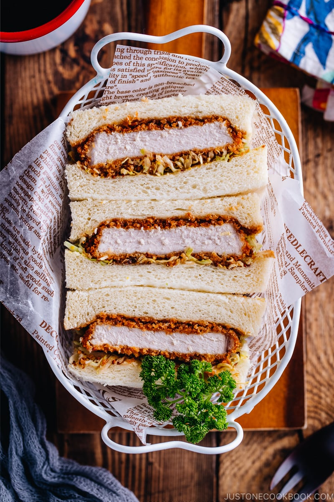

Fried Pork Cutlet Sandwiches

In hurry? Grab and go!
Ingredients
for the fried pork cutlet
- 1 cup breadcrumbs (Japanese breadcrumbs preferred "Panku")
- 1½ Tbsp neutral oil (for the breadcrumbs)
- 500 g boneless pork loin chops
- ½ tsp salt
- freshly ground black pepper
- 2 Tbsp all-purpose flour (plain flour)
- 1 large egg (50 g each w/o shell)
- ½ Tbsp neutral oil (for the egg)
for the bread and the sidings
- 40 g green cabbage
- 4 slices of toast
- 2 tsp unsalted butter
- 2 tsp Dijon mustard
- 4 Tbsp tonkatsu sauce